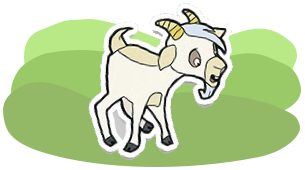
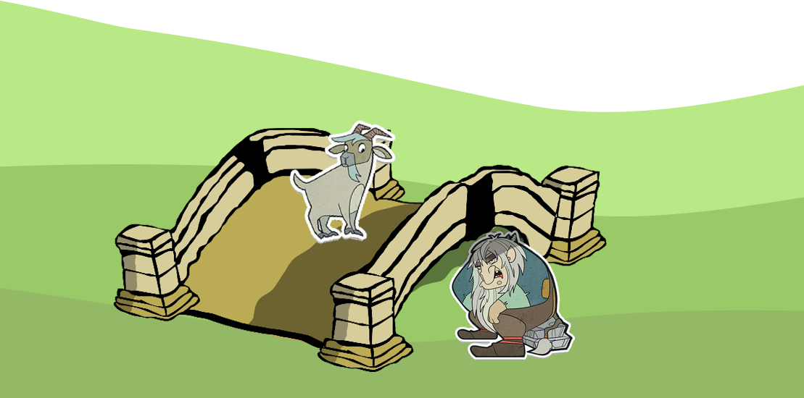

Først kom den yngste Bukken Bruse og skulle over broen. Tripp trapp, tripp trapp, sa det i broen.
"Hvem er det som tripper på min bro?" skrek trollet.
«Å, det er den minste Bukken Bruse. Jeg skal til seters for å gjøre meg fet", sa bukken, den var så fin i stemmen.
"Nå kommer jeg og tar deg", sa trollet.
«Å nei, ta ikke meg, for jeg er så liten, jeg. Bare vent litt, så kommer den mellomste Bukken Bruse, han er mye større."
»Javel, så gå da, " sa trollet.
Om en liten stund kom den mellomste Bukken Bruse og skulle over broen. Tripp trapp, tripp trapp, tripp trapp, sa det i broen.
"Hvem er det som tripper på min bro?" skrek trollet.
»Å, det er den mellomste Bukken Bruse som skal til seters for å gjøre seg fet", sa bukken; den var ikke så fin i stemmen, den.
"Nå kommer jeg og tar deg", sa trollet.
«Å nei, ta ikke meg. Bare vent litt, så kommer den store Bukken Bruse, han er mye, mye større."
»Javel, så gå da", sa trollet.
